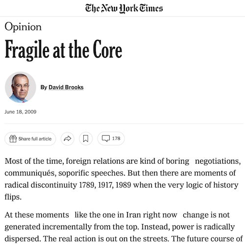

Fragile at the Core

I'm not one for political commentary, but I've been very aware of the issues going on in Iran lately, especially as I've read 1776 and John Adams, and with the recent anniversary of the Tiananmen Square protests/massacre. My thoughts about what's been going on, or at least how it's been described, let me fairly strongly agree with the piece, but especially the quote in the article by Michael McFaul while on the National Security Council:
In retrospect, all revolutions seem inevitable. Beforehand, all revolutions seem impossible. I'm very interested to see how this whole thing plays out.
- Prior: Catalog Card Generator
- Next: TheDieline.com: Coleman Kids